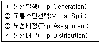
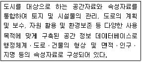
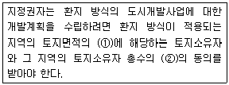
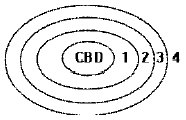
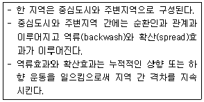

도시계획기사 (2012-09-15 기출문제)
1과목: 도시계획론
1. 미래의 도시계획 방향으로 적합하지 않은 것은?
- 개발 지향적 도시계획
- 에너지 절약적 도시계획
- 환경 친화적 도시계획
- 주민 참여적 도시계획
(정답률: 86%)

2. 압축도시(Compact City)에 대한 설명이 틀린 것은?
- 토지이용의 집적을 통한 토지의 이용가치를 높이기 위해 나온 개발방식이다.
- 친환경적인 도시개발이 가능하고 사회적 비용을 최소화할 수 있다.
- 도시의 기능을 과도하게 분리시킴으로써 불필요한 통행을 유발하는 일이 빈번하다.
- 도심부는 도시의 경제·사회·문화적 중심지로서 압축도시 개발의 핵심적 조성대상이 될 수 있다.
(정답률: 81%)
3. 고대 그리스 도시의 특징으로 틀린 것은?
- 도시 입구와 신전을 축으로 중간지점에 아고라를 배치하였다.
- 본토의 해안지역에서 자연적으로 발생한 도시는 질서 있는 격자형의 도로망을 갖추었다.
- 페르시아와의 전쟁 후 복구 과정에서 격자형 가로망 체계가 일부 본토의 도시에서 채택되었다.
- 주로 자연항을 사용하였으나 필요한 경우 제방을 쌓아 인공 항만을 건설하였다.
(정답률: 71%)
4. 1893년 시카고에서 개최된 만국박람회를 계기로 D.Burnham의 도시디자인 철학에 따라 모든 도시들은 역사적 공간에 오픈 스페이스를 확보하고 광장과 정원에 분수를 설치하도록 하였으며 도시규모에 따라 공공건축물을 규제하였던 것으로, 이후 미국 도시설계의 기원을 이룬 것은?
- 도시미화운동
- 전원도시운동
- 보아잔계획
- 이상도시론
(정답률: 80%)
5. 상업지역 이용인구 40,000명, 1인당 평균상면적 15m, 건폐율 50%, 공공용지율 40%, 평균층수가 10층인 경우 상업지역의 소요면적은?
- 20.0 ha
- 15.8 ha
- 12.5 ha
- 10.0 ha
(정답률: 59%)
6. 파겐스(M. Fagence)가 제시한 직접적이고 영향이 큰 쇄신적 주민참여 기법에 해당하지 않는 것은?
- 델파이방법(Delphi Method)
- 명목집단방법(Nominal Group Method)
- 혼합적탐색방법(Mixed Scanning Method)
- 샤레트방법(Charrette Method)
(정답률: 48%)
7. 지리정보시스템(GIS)에서 활용하는 자료에 대한 설명으로 옳은 것은?
- GIS의 자료는 크게 도형자료와 속성자료로 구분된다.
- 자료 구조 측면에서 GIS자료는 그리드(grid)와 래스터(raster) 자료로 구분된다.
- 래스터 자료는 점, 선, 면을 자료 저장과 표현의 기본 단위로 이용한다.
- 래스터 자료는 저장의 기본 단위 크기를 크게 할수록 정밀도가 향상된다.
(정답률: 65%)
8. 4단계 교통 수요추정법의 순서를 옳게 나열한 것은?

- ① - ② - ④ - ③
- ① - ④ - ② - ③
- ④ - ② - ① - ③
- ④ - ① - ② - ③
(정답률: 77%)
9. 도시공간구조를 설명한 호이트(Homer Hoyt)의 선형이론과 관련이 없는 것은?
- 상류층의 거주지 입지 선택 능력에 의해 도시 내 거주지 유형이 결정된다.
- 도시의 발달은 교통축을 따라 도심에서 외곽으로 부채꼴 모양으로 분화되어 간다.
- 도심부에 고급 주택지가 형성되어 있고, 외곽지로 갈수록 저소득층의 주택지가 형성된다.
- 버제스의 동심원 이론에 교통망의 중요성을 부각하고 도시성장 패턴의 방향성을 추가한 것으로 볼 수 있다.
(정답률: 71%)
10. 토지이용 또는 토지시장에 정부의 공적 개입이 정당화되는 이유로 거리가 먼 것은?
- 공간적 부조화 등 외부효과의 발생
- 개인과 공공의 가치의 일치
- 정보의 부족 및 불로소득의 발생
- 공공재 공급의 필요성
(정답률: 64%)
11. 기반시설로서 광장의 구분에 해당하지 않는 것은?
- 공중광장
- 일반광장
- 경관광장
- 건축물부설광장
(정답률: 69%)
12. 1980년대 계획된 우리나라의 제1기 신도시와 비교하여 2000년대에 추진된 제2기 신도시의 계획 특성이 아닌 것은?
- 친환경, 첨단과 같은 신도시로서의 테마를 강조하였다.
- 1기 신도시에 비해 토지이용에 있어 고밀도를 유지하였다.
- 대중교통지향적인 교통체계를 갖추었다.
- 녹지율을 높여 그린네트워크를 지향하였다.
(정답률: 77%)
13. 도시계획의 자료조사방법에 따른 구분상 다음 중 2차 자료에 해당하는 것은?
- 현지조사
- 면접조사
- 설문조사
- 문헌자료조사
(정답률: 85%)
14. 다음 중 아래의 설명에 해당하는 시스템은?

- UIS(Urban Information System)
- KLIS(Korea Land Information System)
- UPIS(Urban Planning Information System)
- NGIS(National Geography Information System)
(정답률: 70%)
15. 현대도시와 관련한 계획가와 관련 계획 및 주장의 연결이 옳은 것은?
- 멈포드(L. Mumford)- 근린주구단위계획
- 르코르뷔제(Le Corbusier)- 대런던계획(Greater London Plan)
- 라이트(F. L. Wright)- 브로드에이커시티(Broad acre City)
- 아베크롬비(P. Abercrombie) - 보아잔 계획(Plan Voisin)
(정답률: 73%)
16. 다음 중 토지이용계획의 역할로 틀린 것은?
- 도시공간의 기능과 구조를 결정한다.
- 장래를 위한 토지를 보존하게 한다.
- 시가지 확산과 과밀을 유도한다.
- 토지이용의 규제와 실현수단을 제공한다.
(정답률: 79%)
17. 비 유클리드 용도지역제로 지역사회가 필요로 하는 복합 사무실, 연구소, 다세대주택 등을 위한 용도로의 토지이용을 목적으로 조례상에는 특정한 용도지구로 설정하고, 그 요건을 미리 정하나 구체적으로 어디에 설정할 지는 유보해 둠을 의미하는 기법은?
- 부동용도지역(floating zoning)
- 조건부용도지역(conditional zoning)
- 계약용도지역(contract zoning)
- 계획단위개발(planned unit development)
(정답률: 83%)
18. 토지이용계획의 실현수단을 크게 직접적 수단과 간접적 수단으로 구분할 때, 다음 중 간접적 수단이 아닌 것은?
- 지역, 지구, 구역의 지정
- 도시개발사업
- 도시시설의 정비
- 지구단위계획
(정답률: 59%)
19. 인구ㆍ물리적 측면에서의 도시의 정의에 해당하지 않는 것은?
- 인구구성에서 2ㆍ3차 산업의 종사자 비율이 높은 지역
- 고층의 건물군과 도로, 상하수도, 기타 물리적 시설물이 집적된 지역
- 농촌 지역보다 상대적으로 많은 정주인구와 높은 인구 밀도를 갖는 지역
- 비교적 동질적인 성격의 인구가 대단위 집단으로 정주 하고 있는 지역
(정답률: 82%)
20. 에베네제 하워드(Ebenezer Howard)가 주장한 전원도시의 원칙으로 틀린 것은?
- 도시의 계획인구를 제한한다.
- 도시주위에 넓은 농업지대를 영구히 보전하여 도시와 농촌의 장점을 결합한다.
- 시민 경제를 유지할 수 있는 산업을 유치하여 경제기반을 확보한다.
- 도시의 발달에 따른 개발이익은 공유화하되 토지는 사유화를 원칙으로 한다.
(정답률: 79%)
2과목: 도시설계 및 단지계획
21. 우리나라 조선시대 때 건조된 읍성(邑城)에 대한 설명으로 틀린 것은?
- 우리나라의 전통적 지리적 방식에 의해 입지가 결정되었다.
- 당시 지방의 통치를 위해 관료를 파견하기 위한 행정도시의 성격을 갖는다.
- 외부의 적으로부터의 효과적인 방어를 위해 주로 산 정상에 건조되었다.
- 지역의 지형특징에 따라 주요 시설들의 배치가 이루어 졌다.
(정답률: 71%)
22. 계획밀도를 물리적 밀도ㆍ활동밀도ㆍ입체 밀도로 구분할 때 다음 중 물리적 밀도에 포함되지 않는 것은?
- 건폐율
- 용적률
- 인구밀도
- 토지이용률
(정답률: 63%)
23. 순 인구밀도가 200인/ha이고 주택용지율이 60%일 때, 총 인구밀도는?
- 80인/ha
- 120인/ha
- 265인/ha
- 340인/ha
(정답률: 78%)
24. 단지계획의 목표를 설정할 때에 고려하여야 할 사항으로 가장 거리가 먼 것은?
- 건강과 쾌적성
- 경제적 다양성
- 기능의 충족성
- 이웃과의 의사소통
(정답률: 64%)
25. 보행자의 안전을 고려하여 단지 내 차량의 속도를 제한하기 위해 도로에 적용하는 기법으로 적합하지 않은 것은?
- 도로의 형태를 의도적으로 불규칙하게 만든다.
- 입구 및 도로폭을 좁게 한다.
- 도로표면상에 차량감속시설물(hump)를 설치한다.
- 직선 구간을 길게 한다.
(정답률: 76%)
26. 다음 중 생활권의 크기가 작은 것부터 바르게 나열된 것은?
- 인보구 - 근린분구 - 근린주구
- 인보구 - 근린주구 - 근린분구
- 근린분구 - 근린주구 - 인보구
- 근린분구 - 인보구 – 근린주구
(정답률: 75%)
27. 단지계획에 있어서 인동간격의 결정요소가 아닌 것은?
- 일조
- 도로
- 프라이버시
- 조망
(정답률: 70%)
28. 단지계획 중 공원 및 녹지계획과 관련된 설명으로 적합하지 않은 것은?
- 기존의 생태환경은 최대한 보존ㆍ활용한다.
- 비옥도가 양호한 표토층은 채취ㆍ보관 후 활용하도록 한다.
- 소수의 대규모 공원보다는 다수의 소공원을 조성하는 것이 생태성 강화 및 종다양성 확보를 위해 바람직하다.
- 친환경적인 단지조성을 위해 자연지형은 최대한 살리며 절성토를 최소화하여야 한다.
(정답률: 62%)
29. 케빈 린치(Kevin Lynch)가 주장한 도시경관 이미지의 구성요소에 해당하지 않는 것은?
- 연접부(edge)
- 결절점(node)
- 지구(district)
- 광경(landscape)
(정답률: 77%)
30. 도시설계 제어의 유형 중 유도적 성격이 강한 제도가 아닌것은?
- 특별허가(Special Permits)
- 보상지역지구제(Incentive Zoning)
- 개발권이양(TDR:Transfer of Development Right)
- 계획단위개발(PUD:Planned Unit Development)
(정답률: 39%)
31. 도시의 구성에 있어서 도로의 위계체제를 명확히함과 동시에 거주환경지역(Environmental Area)을 설정하여 일상생활에서 보행자를 우선하도록 주장한 보고서는?
- Barlow Report
- Buchanan Report
- Utwatt Report
- Regional Survey of New York and its Environs Vol.Ⅲ
(정답률: 66%)
32. 슈퍼블록(super block)에 대한 설명이 틀린 것은?
- 래드번(Radburn) 시스템이라고 불리기도 한다.
- 건물을 집약함으로서 고층화와 효율화가 가능하다.
- 전력, 난방 등 도시시설의 공동화가 가능하다.
- 블록화로 인해 오픈스페이스의 확보가 어렵다.
(정답률: 79%)
33. 기능별 구분에 따른 각 도로에 대한 설명이 옳은 것은?
- 가구를 구획하는 도로는 국지도로이다.
- 근린주거구역의 골격을 형성하고 근린주거구역 내 교통의 집산기능을 하는 도로는 보조간선도로이다.
- 근린주거구역의 외곽을 형성하고 시ㆍ군 교통의 집산 기능을 하는 도로는 주간선도로이다.
- 대량통과교통의 처리를 목적으로 하며 시ㆍ군의 골격을 형성하는 도로는 집산도로이다.
(정답률: 59%)
34. 오픈스페이스의 기능에 대한 설명이 틀린 것은?
- 시냇물ㆍ연못ㆍ동산 등과 같은 자연 경관적 요소들을 제공한다.
- 오픈스페이스의 적극적 확보를 위하여 평탄한 곳과 접근성이 뛰어난 곳을 우선 확보하여야 한다.
- 기존의 자연환경을 보전ㆍ향상시켜 줄 수 있는 수단을 제공한다.
- 공기정화를 위한 순환통로의 기능을 수행함으로써 미기후의 형성에 영향을 준다.
(정답률: 64%)
35. 2m의 등고선 간격(표고차, H)으로 5%의 경사도를 얻으려면 등고선과 등고선간의 거리(D)는 얼마가 되어야 하는가?
- 20m
- 30m
- 40m
- 50m
(정답률: 63%)
36. 다음 중 페리(Clarence. A. Perry)가 제안한 근린주구(Neighborhood Unit)의 물리적 기본요소가 아닌 것은?
- 초등학교
- 공동체 의식
- 작은 공원과 운동장
- 작은 가게
(정답률: 75%)
37. 평균층수, 건폐율 및 용적률의 관계에 대한 설명으로 옳은 것은?(단, 언급되지 않은 조건은 동일한 것으로 가정한다.)
- 평균층수와 용적률은 일정한 상관관계가 없다.
- 평균층수가 높아지면 용적률도 높아진다.
- 건폐율이 높아지면 용적률은 낮아진다.
- 용적률과 건폐율은 일정한 상관관계가 없다.
(정답률: 67%)
38. 다음 중 세계보건기구(WHO) 주거위생위원회가 제시한 건강한 인간적 기본생활요구를 충족시키는 주거환경 기준이 아닌 것은?
- 안전성
- 건강성
- 경제성
- 편리성
(정답률: 64%)
39. 지구단위계획의 수립과 관련한 설명이 틀린 것은?
- 지구단위계획은 향후 20년 내외에 걸쳐 나타날 시ㆍ군의 성장ㆍ발전 등의 여건변화를 고려하여 수립한다.
- 지구단위계획은 인간과 자연이 공존하는 환경진화적 환경을 조성하고 지속가능한 개발 또는 관리가 가능하도록 하기 위한 계획이다.
- 지구단위계획구역의 지정은 지구단위계획을 통한 체계적ㆍ계획적 개발 또는 관리가 필요한 지역을 대상으로 함을 원칙으로 한다.
- 지구단위계획구역은 결정된 날부터 5년 이내에는 이를 변경하지 않는 것을 원칙으로 한다.
(정답률: 57%)
40. 유비쿼터스도시(U-City)에 대한 설명으로 가장 적합한 것은?
- 인터넷에 가상으로 존재하는 도시를 통칭
- 물리 공간에 IT기술이 융ㆍ복합되어 시민에게 다양한 서비스를 제공하는 도시
- 최첨단 친환경 기술이 접목된 지속가능한 저탄소 녹색도시
- 녹지공간이 풍부하여 쾌적하고 살기 좋은 도시
(정답률: 86%)
3과목: 도시개발론
41. 도시개발사업의 수요를 파악하기 위한 정성적 예측모형에 해당하지 않는 것은?(오류 신고가 접수된 문제입니다. 반드시 정답과 해설을 확인하시기 바랍니다.)
- 시계열분석
- 회귀모형
- 중력모형
- 의사결정나무기법
(정답률: 62%)
42. 개발권양도제(TDR)의 장점으로 틀린 것은?
- 토지소유자의 개발 제한에 대한 보상함으로써 높은 공정성의 확보가 가능하다.
- 보상가격산정에 있어 시장기구를 활용할 수 있어 자원 배분의 왜곡을 방지할 수 있다.
- 개발규제의 실질적인 영속성을 제공한다.
- 클러스터링에 의한 개발비용의 절약이 가능하다.
(정답률: 58%)
43. 부동산 사업 자본 모집을 위한 수단으로서 파트너십에 대한 설명이 틀린 것은?
- 일반 파트너십의 설립은 정식 절차 없이 구두 또는 문서에 의해서도 가능하다.
- 일반 파트너십은 유형자산 뿐만 아니라 기술, 아이디어, 노하우와 같은 무형자산도 가능하다.
- 유한 파트너십에서 유한 파트너는 경영과정에 참여할 수 있어 일반 파트너와 달리 무한 책임을 진다.
- 유한책임 파트너십에서는 의무와 채무에 대하여 무한 책임을 부담하는 일반 파트너가 존재하지 않는다.
(정답률: 62%)
44. 도시 및 주거환경정비법령상, 주거환경개선사업의 경우 임대주택은 건설하는 주택 전체 세대수의 얼마 이하로 하도록 규정하고 있는가?
- 100분의 30 이하
- 100분의 50 이하
- 100분의 80 이하
- 100분의 90 이하
(정답률: 57%)
45. 도시 및 주거환경정비법에 따른 정비사업의 종류가 아닌것은?
- 도시환경정비사업
- 도시개발사업
- 주거환경관리사업
- 가로주택정비사업
(정답률: 42%)
46. 도시개발법에 따른 도시개발사업의 시행 방식 중 해당 토지의 지가가 주변보다 높거나 대지의 효용증진을 위한 정비를 목적으로 하여 사업 시행 전에 존재하던 권리관계에 변동을 가하지 않고 사업시행 후의 새로이 조성된 대지에 기존의 권리를 이전하는 방식은?
- 수용방식
- 환지방식
- 매수방식
- 사용방식
(정답률: 80%)
47. 도시개발법령상 도시개발구역으로 지정할 수 있는 대상지역 및 규모 기준이 틀린 것은? (단, 도시지역의 경우임.)
- 주거지역 : 1만m2 이상
- 상업지역 : 1만m2 이상
- 공업지역 : 1만m2 이상
- 자연녹지지역 : 1만m2 이상
(정답률: 77%)
48. Calthorpe이 제시한 TOD의 7가지 원칙에 해당되지 않는 것은?
- 지구 내에는 걸어서 목적지까지 갈 수 있는 보행 친화적인 가로망 구성
- 기존 근린지구 내에 대중교통 노선을 따라 재개발 촉진
- 공공공간물 건물배치 및 근린생활의 중심지로 조성
- 주택의 유형, 밀도, 비용 등은 고층, 고밀, 고급화를 지향하고 통일된 유형물 배치
(정답률: 73%)
49. 도시개발에서 발생 가능한 위험의 유형을 시장위험(market risk), 금융위험(financial risk), 건설관련위험(construction risk)으로 나눌 때, 다음 중 시장위험과 관련된 사항이 아닌 것은?
- 문화재의 출토
- 소비자의 선호도 변화
- 경쟁구조 변화
- 분양가 책정의 적정성
(정답률: 70%)
50. 도시개발의 개념적 정의로 적합하지 않은 것은?
- 도시적 형태와 기능을 지니지 않은 토지에 도시적 기능을 부여한 것
- 기존의 도시적 용지에 대해 도시기능 제고를 목적으로 토지의 형상이나 이용에 변화를 일으키는 개발행위
- 도시가 성장ㆍ변화함에 따라 새로이 요구되는 도시공간을 창출하고 공급하는 행위
- 도시 외곽지역에서 농업용 등 비도시적 용도의 토지를 관리ㆍ유지하는 것
(정답률: 63%)
51. 도시개발수요를 분석하기 위한 정성적 예측모형 중 조사하고자 하는 특정사항에 대하여 전문가 집단을 대상으로 반복 앙케이트를 수행하여 의견을 수집하는 방법은?
- 델파이법
- 지수평활법
- 박스젠킨스법
- 의사결정나무기법
(정답률: 76%)
52. 도시개발의 시장원리에 관한 설명 중 틀린 것은?
- 이윤 극대화를 추구하는 완전경쟁시장에서 토지는 최대의 수익을 얻을 수 있는 형태로 개발 이용된다.
- 토지의 개발용도는 토지의 입지조건과 이에 따른 개발 수요의 특성에 따라 달라진다.
- 토지의 가격은 여러 개발업자가 토지를 매입하기 위하여 지불하고자 하는 지대 중 가장 빈도수가 높은 가격에 의해 결정된다.
- 토지시장에서 특정 토지가 어떠한 용도로 개발·이용될 것인가는 그 토지를 여러 가지 용도로 개발·이용하였을 때 예상되는 수익들을 비교하여 결정된다.
(정답률: 62%)
53. 다음 중 Robert Goodland(1994)가 제안한 지속 가능한 도시개발을 위한 지속성의 분류에 해당하지 않는 것은?
- 사회적 지속성 : 문화, 역사, 제도
- 환경적 지속성 : 환경의 질, 생태계 용량, 자연자원
- 경제적 지속성 : 경제자본, 산업, 사업
- 기술적 지속성 : 과학, 기술개발
(정답률: 65%)
54. 사업성 평가지표에 대한 설명이 옳은 것은?
- 사업성 평가에 일반적으로 사용되는 지표로는 수익성 지수(PI), 순현재가치(NPV),내부수익률(IRR)이 있다.
- 순현재가치가 0보다 클 때 프로젝트의 사업성을 판단할 수 없다.
- 내부수익률이 자본비용보다 작을 때 사업성이 있는 것으로 평가된다.
- 수익성 지수가 1보다 작을 때 사업성이 있는 것으로 평가된다.
(정답률: 66%)
55. 미래의 불확실성에 대응하기 위한 분석 방법인 시나리오 분석에 대한 설명으로 틀린 것은?
- 장래에 일어날 수 있는 일이 어떠한 영향을 미치게 되는 가를 시나리오적인 문장으로 표현한다.
- 보통 현상연장형, 낙관적 시나리오, 비관적 시나리오의 3가지 종류를 준비한다.
- 전문가에게 각 시나리오 중 어느 것이 실현된 것인가를 평가받거나 또는 각각의 시나리오의 발생확률을 평가 받는다.
- 연속된 의사결정이 도식적으로 표현되어 이해가 쉽고, 각 시나리오별 대안의 기댓값 산출이 가능하다.
(정답률: 70%)
56. 다음 중 ①, ②에 들어갈 내용이 모두 옳은 것은?

- ① 3분의 2이상 ② 3분의 2이상
- ① 3분의 2이상 ② 2분의 1이상
- ① 2분의 1이상 ② 2분의 1이상
- ① 2분의 1이상 ② 3분의 2이상
(정답률: 81%)
57. 도시재정비 촉진을 위한 특별법에 따른 재정비촉진계획의 수립에 대한 내용이 틀린 것은?
- 재정비촉진계획이란 재정비촉진지구의 재정비촉진사업을 계획적이고 체계적으로 추진하기 위한 재정비촉진지구의 토지이용, 기반시설의 설치 등에 관한 계획을 말한다.
- 시장ㆍ군수ㆍ구청장은 재정비촉진계획을 수립 또는 변경하려는 경우에는 그 내용을 14일 이상 주민에게 공람하고 지방의회의 의견을 들은 후 공청회를 개회하여야 한다.
- 시ㆍ도지사 또는 대도시시장은 재정비촉진계획 수립의 전 과정을 총괄 진행ㆍ조정하게 하기 위하여 도시계획ㆍ도시설계ㆍ건축 등 분야의 전문가를 총괄계획가로 위촉할 수 있다.
- 시장ㆍ군수ㆍ구청장은 재정비촉진계획을 수립하여 지방도시계획위원회의 심의를 거쳐 국토해양부장관에게 결정을 신청하여야 한다.
(정답률: 53%)
58. 다음 중 신도시의 개발 목적으로 틀린 것은?
- 저개발지역의 발전을 촉진하여 지역발전의 거점으로 성장시키고자 하는 경우
- 대도시에 인구나 산업의 집중을 꾀하고자 하는 경우
- 새로운 산업기지로 발전시켜 고용기회를 확대하고 주민의 소득증대를 꾀하고자 하는 경우
- 국가적 필요에 따라 신수도로 활용하기 위하여 도시를 새로 개발하는 경우
(정답률: 70%)
59. 다음 중 시행방식에 따른 재개발의 유형이 아닌 것은?
- 전면재개발(redevelopment)
- 수복재개발(rehabilitation)
- 전환재개발(conversion)
- 보전재개발(conservation)
(정답률: 62%)
60. 주택종합계획에 관한 내용으로 틀린 것은?
- 국토교통부장관이 국민의 주거안정과 주거수준의 향상을 도모하기 위하여 수립한다.
- 주택종합계획은 국토기본법에 따른 국토종합계획에 적합하여야 한다.
- 연도별 계획과 10년 단위의 계획으로 구분되며, 연도별 계획은 해당 연도 2월말 까지 수립하여야 한다.
- 주택종합계획안을 마련하여 관계 중앙행정기관의 장과 협의 후 중앙도시계획위원회의 심의를 거쳐 확정한다.
(정답률: 34%)
4과목: 국토 및 지역계획
61. 도시지역과 그 주변지역의 무질서한 시가화를 방지하고 계획적ㆍ단계적인 개발을 도모하기 위하여 일정 기간 동안 시가화를 유보할 필요가 있다고 인정되어 국토해양부장관이 지정하는 구역은?
- 특정시설제한구역
- 시가화조정구역
- 개발제한구역
- 도시개발예정구역
(정답률: 82%)
62. 다음 중 지역문제의 발생 원인으로 가장 거리가 먼 것은?
- 지역 내 특정 자연자원의 부존여부와 입지조건의 차이
- 지역주민들의 요구 수준의 차이
- 정부가 추진하는 선(先)성장, 후(後)분배의 경제개발 정책방향
- 해당 지역 지배 산업의 전 세계 또는 다른 지역의 산업들과의 경쟁력 수준
(정답률: 61%)
63. 성장거점이론에 있어서 선도산업이 갖는 특성이 아닌 것은?
- 진보된 수준의 기술을 요구하는 새롭고 동적인 산업이다.
- 다른 부분과 강한 산업적 연계를 갖는다.
- 성장을 유도하고 그 성장을 다른 곳으로 확산시킨다.
- 다른 산업에 비하여 성장속도는 느리나 안정된 성장을 보인다.
(정답률: 74%)
64. 다음 중 수도권 정비계획안의 승인권자는?
- 대통령
- 국무총리
- 국토해양부장관
- 경기도지사
(정답률: 65%)
65. 부드빌(Boudeville)의 지역 분류에 해당하지 않는 것은?
- 동질지역(homogeneous area)
- 결절지역(nodal region)
- 계획지역(planning region)
- 낙후지역(lagging region)
(정답률: 72%)
66. 다음 중 지역계획이론의 범주에 포함되지 않는 것은?
- 경제기반이론 (Economic Base Theory)
- 입지론 (Location Theory)
- 선형이론 (Sector Theory)
- 성장거점이론 (Growth pole Theory)
(정답률: 52%)
67. 광역개발사업의 효율적 추진을 위하여 필요한 경우 관계 기관간의 원활한 협조체제를 구축하고 의견을 교환하기 위하여 관계 중앙행정기관 및 광역시ㆍ도의 관계 공무원과 민간 전문가가 참여토록 국토해양부장관이 구성하여 운영하는 기구는?
- 광역개발협의회
- 지역발전협의회
- 국가균형발전위원회
- 자치단체협의회
(정답률: 63%)
68. 도시순위규모법칙에 따른 q값이 과거 1.0에서 현재 2.0으로 증가한 어느 나라의 도시체계에 관한 설명으로 가장 옳은 것은?
- 과거에는 도시 인구의 분포가 균등하지 못하였으나 현재는 균등한 분포에 근접하고 있다.
- 과거에는 인구분포가 균형을 이루었으나 현재는 주요 도시의 인구가 농촌 인구의 2배가 되었다.
- 과거보다 수위 도시 또는 소수의 몇몇 대도시에 더욱 많은 인구가 집중하였다.
- 과거보다 도시화의 속도가 2배로 증가하였다.
(정답률: 52%)
69. 1930년대와 1940년대 초의 자연자원 중심의 대표적 지역 계획인 테네시계곡 개발계획(TVA)이 이루어진 곳은?
- 미국
- 영구
- 독일
- 이탈리아
(정답률: 73%)
70. 버제스(Burgess)의 동심원 구조에서 근로자주택지대에 해당하는 곳은?

- 1
- 2
- 3
- 4
(정답률: 59%)
71. 다음 중 아래와 같이 주장한 학자는?

- Haggett
- Myrdal
- Kaldor
- Williamson
(정답률: 71%)
72. 다음 중 국토계획의 필요성에 해당하지 않는 것은?
- 유한적 국토자원의 효과적 활용
- 국토 관련 행정의 중앙 집중 및 규제력 강화
- 지역격차와 불균형 문제 해소
- 상위 정책 간 마찰조정과 하위정책에 대한 지침 제시
(정답률: 75%)
73. 동질지역을 구분하는 방법에 해당하지 않는 것은?
- 부드빌의 가중지수법
- 베리의 요인분석법
- 글라손의 표준편차크기법
- 크리스탈러의 중심지체계분석
(정답률: 55%)
74. 다음의 도시계획이론 중 상황의 종합적 분석과 최적의 대안선택이 가능하다고 보는 규범적이며 이상적인 접근 방법은?
- 합리적 접근방법
- 민족화 접근방법
- 점진적 접근방법
- 혼합주사적 접근방법
(정답률: 73%)
75. 다음 중 웨버(A. Weber)의 공업입지이론에서 입지를 결정하는 인자에 해당하지 않는 것은?
- 운송비
- 노동비
- 직접경제
- 제품수요
(정답률: 85%)
76. 다음 중 참여정부의 국가균형발전정책과 관련이 없는 것은?
- 행정중심복합도시 건설
- 공공기관 지방 이전
- 경제특구 육성
- 수도권 규제 완화
(정답률: 79%)
77. 다음의 지역개발이론 중 성격이 다른 하나는?
- 기본수요이론(Basic Needs Approach)
- 불균형성장이론(Non-balanced Growth Theory)
- 농정적개발론(Agropolitan Deveelpment)
- 지속가능한개발론(Ecologically Sustalnable Development)
(정답률: 62%)
78. 크리스탈러의 중심지 이론에서 1개의 중심지가 그 중심지 및 3개의 하위 중심지를 포섭하는 원리는?
- 시장의 원리
- 행정의 원리
- 교통의 원리
- 근린의 원리
(정답률: 58%)
79. 제3차 수도권정비계획에 관한 설명으로 틀린 것은?
- 계획기간은 2006년 ~ 2020년까지 15년간이다.
- 공간적 범위는 수도권 전체이다.
- 제4차 국토종합계획 수정계획과는 계획기간이 일치하지 않는다.
- 제2차 수도권정비계획을 조기에 종료하고, 새로운 수도권의 비전과 발전방향을 담아 수립하였다.
(정답률: 66%)
80. 크리스탈러의 중심지이론에서 가정하는 내용이 틀린 것은?
- 균일한 인구밀도를 갖는 동질적 공간이다.
- 교통비는 소비자가 지불한다.
- 모든 소비자의 구매력은 동일하다.
- 수송비용은 방향에 따라 달라진다.
(정답률: 58%)
5과목: 도시계획관계법규
81. 도시ㆍ주거환경정비기본계획에 관한 설명으로 옳지 않은 것은?
- 20년 단위로 수립하여야 한다.
- 대도시가 아니니 경우 도지사가 기본계획의 수립이 필요하다고 인정하는 시를 제외하고 기본계획을 수립하지 아니할 수 있다.
- 기본계획에 대하여 5년마다 타당성 여부를 검토하여 그 결과를 기본계획에 반영하여야 한다.
- 기본계획의 작성기준 및 작성방법은 국토해양부장관이 이를 정한다.
(정답률: 48%)
82. 광역도시계획의 수립권자에 대한 설명으로 옳지 않는 것은?
- 광역계획권이 같은 도의 관할구역에 속하여 있는 경우 관할 시장 또는 군수가 공동으로 수립한다.
- 광역계획권이 둘 이상의 시ㆍ도의 관할 구역에 걸쳐 있는 경우 국토해양부장관이 수립한다.
- 국가계획과 관련된 광역도시계획의 수립이 필요한 경우 국토해양부장관이 수립한다.
- 광역계획권을 지정한 날부터 3년이 지날 때까지 관할 시ㆍ도지사로부터 광역도시계획의 승인 신청이 없는 경우 국토해양부장관이 수립한다.
(정답률: 46%)
83. 도시지역의 시급한 주택난을 해소하기 위하여 주택건설에 필요한 택지의 취득, 개발, 공급 및 관리 등에 관하여 특례를 규정함으로써 국민 주거생활의 안정과 복지 향상에 이바지 함을 목적으로 하는 것은?
- 주택건설촉진법
- 택지개발촉진법
- 도시개발법
- 주택법
(정답률: 65%)
84. 국토의 용도지역 구분에 해당하지 않는 것은?
- 도시지역
- 관리지역
- 비도시지역
- 자연환경보전지역
(정답률: 70%)
85. 도시ㆍ군계획시설결정이 고시된 도시ㆍ군계획시설에 대하여 그 고시일부터 얼마가 지날 때까지 그 시설의 설치에 관한 도시ㆍ군계획시설사업이 시행되지 아니하는 경우 그 도시ㆍ군계획시설결정이 효력을 잃는가?
- 10년
- 15년
- 20년
- 30년
(정답률: 40%)
86. 환지에 의한 도시개발사업에서 과소 토지의 기준에 관한 설명이 옳지 않는 것은?
- 과소 토지의 기준이 되는 면적은 대통령령으로 정하는 범위에서 시행자가 규약ㆍ정관 또는 시행규정으로 정한다.
- 과소 토지 여부의 판단은 권리면적을 기준으로 한다.
- 기존 건축물이 없는 경우 과소 토지의 기준이 되는 면적을 국토해양부장관이 정하는 바에 따라 따로 정할 수 있다.
- 환지로 지정할 토지의 필지수가 도시개발사업으로 조성되는 토지의 필지수보다 적은 경우, 대통령령이 정하는 바에 따라 과소 토지의 기준이 되는 면적을 따로 정할 수 있다.
(정답률: 41%)
87. 다음 중 도시공원 및 녹지 등에 관한 법률에 따른 도시공원의 종류에 해당하지 않는 것은?(단, 시ㆍ도의 조례로 정하는 공원은 고려하지 않는다.)
- 근린공원
- 중앙공원
- 어린이공원
- 묘지공원
(정답률: 64%)
88. 다음 중 국토의 계획 및 이용에 관한 법률에 따른 '도시ㆍ군계획사업' 에 해당하지 않는 것은?
- 도시ㆍ군계획시설사업
- 도시개발법에 따른 도시개발사업
- 도시 및 주거환경정비법에 따른 정비사업
- 택지개발촉진법에 따른 택지개발사업
(정답률: 45%)
89. 공원 및 녹지 등에 관한 법규상 하나의 도시지역 안에 있어서의 도시공원의 확보 기준은? (단, 개발제한구역 및 녹지지역을 제외한 도시지역 안에 있어서의 경우는 고려하지 않는다.)
- 해당 도시지역 안에 거주하는 주민 1인당 3m2 이상
- 해당 도시지역 안에 거주하는 주민 1인당 4m2 이상
- 해당 도시지역 안에 거주하는 주민 1인당 5m2 이상
- 해당 도시지역 안에 거주하는 주민 1인당 6m2 이상
(정답률: 64%)
90. 다음 중 수도권정비계획법에 따른 대규모 개발사업의 종류에 해당하지 않는 택지조성사업은? (단, 면적이 모두 100만제곱미터 이상인 경우다.)
- 「도시 및 주거환경정비법」 에 따른 주거환경개선사업
- 「택지개발촉진법」 에 따른 택지개발사업
- 「주택법」 에 따른 주택건설사업
- 「산업입지 및 개발에 관한 법률」 에 따른 산업단지 및 특수지역에서의 주택지 조성 사업
(정답률: 36%)
91. 부설주차장의 설치 의무가 면제되는 시설물의 위치ㆍ용도ㆍ규모 및 부설주차장의 규모 기준으로 옳지 않은 것은?
- 연면적 1만m2 이상의 판매시설 및 운수시설에 해당하지 아니하는 시설물
- 연면적 1만5천m2 이상의 문화 및 집회시설 위락시설에 해당하지 아니하는 시설물
- 주차대수가 500대 이하 규모의 부설주차장의 경우
- 도로교통법에 따른 차량통행의 금지 또는 주변의 토지이용 상황으로 인하여 부설주차장의 설치가 곤란하다고 시장ㆍ군수 또는 구청장이 인정하는 장소
(정답률: 63%)
92. 다음 중 건축법령상 공동주택에 해당하지 않는 것은?
- 연립주택
- 다가구주택
- 다세대주택
- 기숙사
(정답률: 55%)
93. 다음 중 국토기본법에 따른 국토계획의 구분에 해당하지않는 것은?
- 부문별계획
- 도종합계획
- 시ㆍ군종합계획
- 권역별계획
(정답률: 52%)
94. 주택법에 의한 최저주거기준에 대한 설명으로 옳지 않은 것은?
- 국토해양부장관은 국민이 쾌적하고 살기 좋은 생활을 하기 위하여 필요한 최저주거기준을 설정ㆍ공고하여야 한다.
- 국토해양부장관이 최저주거기준을 설정ㆍ공고하려는 경우에는 미리 관계 중앙행정기관의 장과 협의한 후 주택정책 심의위원회의 심의를 거쳐야 한다.
- 최저주거기준에는 주거면적, 용도별 방의 개수, 주택의구조ㆍ설비ㆍ성능 및 환경 요소 등의 사항이 포함되어야 한다.
- 최저주거기준은 사회적ㆍ경제적인 여건변화를 고려하여 5년마다 그 적합성을 심의 받아야 한다.
(정답률: 35%)
95. 도시개발사업의 전부 또는 일부를 환지 방식으로 시행하기 위하여 시행자가 작성하는 환지계획의 내용에 해당하지 않는 것은?
- 환지설계
- 환지예정지 지정 명세
- 필지별로 된 환지 명세
- 축척 1200분의 1 이상의 환지예정지도
(정답률: 52%)
96. 도시공원 및 녹지 등에 관한 법률에 따른 도시공원에 관한 설명으로 옳지 않은 것은?
- 도시공원은 도시지역에서 도시자연경관을 보호하고 시민의 건강ㆍ휴양 및 정서생활을 향상시키는 데에 이바지하기 위하여 설치ㆍ지정한다.
- 공원시설은 도시공원의 효용을 다하기 위하여 설치하는 시설로 그네ㆍ미끄럼틀과 같은 유희시설을 포함한다.
- 도시공원의 설치기준, 관리기준 및 안전기준은 대통령령으로 정한다.
- 도시공원이 위치한 행정구역을 관할하는 특별시장ㆍ광역시장ㆍ특별자치시장ㆍ특별자치도지사ㆍ시장 또는 군수는 그 도시공원의 조성계획을 입안하여야 한다.
(정답률: 49%)
97. 노외주차장의 출구와 입구를 각각 따로 설치하여야 하는 노외주차장의 규모 기준은?
- 주차대수 300대를 초과하는 규모
- 주차대수 400대를 초과하는 규모
- 주차대수 500대를 초과하는 규모
- 주차대수 600대를 초과하는 규모
(정답률: 57%)
98. 다음 중 중앙도시계획위원회에 대한 설명으로 옳은 것은?
- 위원장과 부위원장 각 1명을 포함하여 20명 이상 25명 이내의 위원으로 구성한다.
- 중앙도시계획위원회의 위원장은 국토해양부장관이다.
- 공무원이 아닌 위원의 수는 10명 이상으로 하고, 그 임기는 3년으로 한다.
- 위원은 관계 중앙행정기관의 공무원과 도시ㆍ군계획과 관련된 분야에 관한 학식과 경험이 풍부한 자 중에서 국토해양부장관이 임명하거나 위촉한다.
(정답률: 37%)
99. 시장ㆍ군수 또는 구청장은 도시개발구역의 지정에 관한 주민의 의견을 청취하려는 경우, 해당 사항을 최소 얼마이상 일반인에게 공람시켜야 하는가?
- 14일
- 1개월
- 3개월
- 6개월
(정답률: 67%)
100. 산업단지와 그 지정권자의 연결이 옳지 않은 것은?
- 국가산업단지 : 국토해양부장관
- 일반산업단지 : 시ㆍ도지사
- 도시첨단산업단지 : 시ㆍ도지사
- 농공단지 : 시ㆍ도지사
(정답률: 49%)